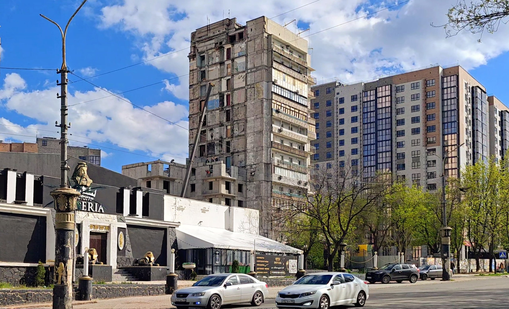

TOT Insights is the central research resource on Russia's occupation of Ukrainian territory. It builds the knowledge base this subject requires and turns it into analysis sound enough for scholars and decision-makers to rely on.

- Research and the knowledge base. We build the knowledge base and produce the research. Original fieldwork in Ukraine, occupation administrative records, and open-source monitoring become analytical briefings, structured datasets, primary-source collections, and peer-reviewed scholarship. The aim is an authoritative foundation that other researchers can build on.
- Informing policy and practice. This knowledge reaches the people who act on it. The platform informs policymakers, analysts, and practitioners working on coercion, child deportation, sanctions evasion, and occupation governance.
- Working in partnership. We are a collaborative platform. We share data, pursue joint research, and develop tailored analysis with partners working on a particular question or territory.
Crimea and Sevastopol, and the occupied and formerly occupied parts of Zaporizhzhia, Kherson, Luhansk, Donetsk, and Kharkiv.
Correspondence is welcome in English, Ukrainian, or Russian.
If you would like to get in touch, please visit our Contact page.
Leverhulme Early Career Fellow and specialist in Russian information operations, memory politics, and occupation mechanisms. Author of Memory Makers (Bloomsbury, 2023) and Russia's War (Polity, 2023). Holds non-resident fellowships at CSIS Washington DC, ICDS Tallinn, and the Kennan Institute. Regular fieldwork in eastern Ukraine.
King's College London profile ↗Historian of international order, human rights, and British foreign policy. Co-Investigator on the platform's strategic stability research programme.
King's College London profile ↗Specialist in international humanitarian law and occupation legal architecture. Research Fellow at the Leverhulme Centre for Research on Slavery in War at the University of Nottingham. Leads the platform's work on the legal aspects of the occupation across thematic areas, with focus on forced labour, slavery, forced collaboration and other forms of coercion.
ORCID ↗Former adviser to the Mayor of Mariupol. Leads systematic monitoring of occupation administration, civilian conditions, and demographic change in Mariupol and the southern occupied territories.
Ph.D. candidate in War Studies at King's College London. Research examines Russian identity production, securitization, and economic predation in Ukraine's temporarily occupied territories, using political anthropological approaches grounded in fieldwork across the former Soviet space and Middle East.
Former U.S. Army Special Operations Civil Affairs Officer with two decades of operational experience, including the counter-ISIS problem set (2014–2020), deployment to Kobanî following the liberation of Manbij, and leadership of civilian analytical teams in Erbil and Kyiv. Published in the Texas National Security Review, Small Wars Journal, and War on the Rocks. MA cum laude, European Union and Russian Studies, University of Tartu (2020).
Contributes to primary source collection, database maintenance, and analytical support across the platform.
The research centre at King's College London where the Ukraine and Russia Programme is based.
csns.uk ↗Our partner centre researching coercion, captivity, and exploitation in wartime.
slaveryinwar.org ↗The TOT Insights Hub holds King's College London research ethics approval (ref. LRS-25/26-55904); King's College London is the data controller. This section sets out how we gather, source, and present our research.
Evidence base. Our research draws on publicly available material and on systematic monitoring, and involves no primary data collection from individual people. Our sources are: publicly available institutional records (Russian government procurement portals, official publications, court records, occupation-administration documents); systematic monitoring of public Telegram channels operated by Russian military and occupation-administration bodies, where we read publicly posted content without interacting with the channels and without monitoring any private communications; data shared by registered Ukrainian NGO and research-organisation partners through secure encrypted transfer; and secondary analysis of existing anonymised datasets. We distinguish documented fact from our own assessment, and label analysis as such.
What we publish, and what we hold back. Not everything we hold is published. Each item is either published or kept in our restricted repository and used only to inform analysis. We publish content only where it is verified and sourced, where publishing it creates no risk of identifying any individual (including through the combination of separate data points), and where it adds genuine analytical value. We never publish individual-level data on civilians in occupied territory: survey data, data on children, and citizen-appeals data are published only in aggregated, anonymised form, with re-identification risk assessed before publication.
How we cite sources. Every factual claim is attributed. Publicly available sources are cited with a direct link to the specific material. Datasets we have deposited for citation are referenced by their institutional source and a DOI. Material from our closed monitoring is cited by a named, accountable institutional source, either "TOT Insights closed monitoring" or, where it comes from a partner, "Centre for the Study of Occupation monitoring," and is not linked.
Occupation and Russian state sources. We cite occupation and Russian state-controlled sources as evidence of what those bodies themselves say and do, never as independent confirmation of fact. In line with our research ethics, we do not provide direct links to occupied-territory occupation sources; we cite them by name and date, without directing readers or traffic to the occupier's own platforms, and link to a preserved archive copy where one exists. Russian national state sources are cited and linked as normal.
Naming individuals. We name an individual only where they are a public official acting in an official capacity, or where they are subject to formal sanctions, and we cite the source in each case. We process this data on the basis of the research exemption (Article 89 UK GDPR; Schedule 2, Data Protection Act 2018) and, where relevant, legitimate interests in accountability. UK data protection law applies to everyone regardless of conduct. We publish public-role information (name, position, appointment, and documented official decisions and actions); information beyond the public role is held in our restricted repository and published only where a specific accountability justification is documented. We do not treat listings on non-governmental accountability databases as a basis for naming anyone. Data shared by partner organisations is attributed to the organisation, not to individuals, unless an individual has given explicit written consent.
Closed monitoring and corrections. Some material is not published openly, to protect people in occupied territories and those who contribute to our work; see our Closed Monitoring page for how vetted organisations may request access. We welcome corrections, and data subjects may exercise their rights under UK data protection law, by contacting jade.mcglynn@kcl.ac.uk.